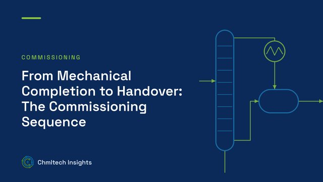

AI Readiness & AI Strategy
Find where AI pays off in your business and build a roadmap your team will use.
More info →Vancouver, BC · Serving businesses across Canada
AI, digital transformation & operational excellence, engineered to last.
We help businesses redesign processes, adopt AI, select the right systems, automate workflows, and build KPI-driven operations.
What we do
We work with leadership teams and front-line employees to find root causes, redesign workflows, improve systems and make performance visible.
Find where AI pays off in your business and build a roadmap your team will use.
More info →Choose the right systems and plan the change, from today’s workflows to go-live.
More info →Cut waste and lift throughput with Lean, Six Sigma and KPIs your team owns.
More info →All services
The processes, systems, roles and cash discipline to grow without losing control.
Learn more →Find, fix and monitor your core processes with Lean, Six Sigma and change management.
Learn more →More output from the people, equipment and space you already have.
Learn more →Every step, hand-off and system, mapped with the people who do the work.
Learn more →Lean and Six Sigma projects with KPIs your team keeps running after we leave.
Learn more →A two-week review of your operation that ends in prioritized quick wins.
Learn more →Choose the right projects, balance resources and deliver them on time.
Learn more →A quality system that runs the business better and passes certification.
Learn more →Training built around your own processes, with real improvement projects.
Learn more →AI assessment and strategy, vendor selection, governance and team training.
Learn more →Connected data, company knowledge, AI agents and workflows, with governance.
Learn more →A clear plan, 90-day priorities, a weekly scorecard and a meeting rhythm.
Learn more →Our approach
We learn your goals, pain points and constraints.
We document how work and information really flow today.
We rank quick wins, automation and AI opportunities by value.
We help select systems, redesign workflows and train your team.
We track the results so the improvements stick.
Latest insights

Strategy
Budget 2026 for plants and factories: the Productivity Mega Deduction, wider SR&ED, clean technology credits to 2040, and what to do before year end.

Artificial Intelligence
When the EU AI Act applies to a Canadian business, what it requires after the 2026 Digital Omnibus, how Canada's own rules compare, and a compliance path.

Process Engineering
Commissioning series · Part 1 of 3
How a process plant is commissioned: the stages from mechanical completion to handover, systemization, pre-commissioning checks and who leads when.
Free training
Lean Six Sigma, ISO 9001, Kaizen, AI, process engineering, PMP and more, with 16,845+ questions, free.
Free courses
Interactive courses from AI prompting, LLMs and private AI to business basics, ERP selection, ISO 9001, Lean Six Sigma, S&OP and FEED, with labs, exams and certificates.
Book a strategy call. We will talk through your goals, pain points and where AI, systems or process work can make the biggest difference.
Or email info@chmltech.com